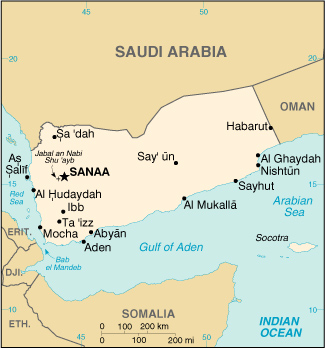

|
Yemen | |
| Introduction Geography People Government Economy Communications Transportation Military Transnational Issues | ||
|  | ||
| Yemen | Introduction | Top of Page |
| Background: | North Yemen became independent of the Ottoman Empire in 1918. The British, who had set up a protectorate area around the southern port of Aden in the 19th century, withdrew in 1967 from what became South Yemen. Three years later, the southern government adopted a Marxist orientation. The massive exodus of hundreds of thousands of Yemenis from the south to the north contributed to two decades of hostility between the states. The two countries were formally unified as the Republic of Yemen in 1990. A southern secessionist movement in 1994 was quickly subdued. In 2000, Saudi Arabia and Yemen agreed to a delimitation of their border. |
| Yemen | Geography | Top of Page |
| Location: | Middle East, bordering the Arabian Sea, Gulf of Aden, and Red Sea, between Oman and Saudi Arabia |
| Geographic coordinates: | 15 00 N, 48 00 E |
| Map references: | Middle East |
| Area: |
total:
527,970 sq km
land: 527,970 sq km water: 0 sq km note: includes Perim, Socotra, the former Yemen Arab Republic (YAR or North Yemen), and the former People's Democratic Republic of Yemen (PDRY or South Yemen) |
| Area - comparative: | slightly larger than twice the size of Wyoming |
| Land boundaries: |
total:
1,746 km
border countries: Oman 288 km, Saudi Arabia 1,458 km |
| Coastline: | 1,906 km |
| Maritime claims: |
contiguous zone:
24 NM
continental shelf: 200 NM or to the edge of the continental margin exclusive economic zone: 200 NM territorial sea: 12 NM |
| Climate: | mostly desert; hot and humid along west coast; temperate in western mountains affected by seasonal monsoon; extraordinarily hot, dry, harsh desert in east |
| Terrain: | narrow coastal plain backed by flat-topped hills and rugged mountains; dissected upland desert plains in center slope into the desert interior of the Arabian Peninsula |
| Elevation extremes: |
lowest point:
Arabian Sea 0 m
highest point: Jabal an Nabi Shu'ayb 3,760 m |
| Natural resources: | petroleum, fish, rock salt, marble, small deposits of coal, gold, lead, nickel, and copper, fertile soil in west |
| Land use: |
arable land:
3%
permanent crops: 13% permanent pastures: 33.5% forests and woodland: 4% other: 46.5% (1999) |
| Irrigated land: | 5,674 sq km (1999) |
| Natural hazards: | sandstorms and dust storms in summer |
| Environment - current issues: | very limited natural fresh water resources; inadequate supplies of potable water; overgrazing; soil erosion; desertification |
| Environment - international agreements: |
party to:
Biodiversity, Climate Change, Desertification, Endangered Species, Environmental Modification, Hazardous Wastes, Law of the Sea, Ozone Layer Protection
signed, but not ratified: Nuclear Test Ban |
| Geography - note: | strategic location on Bab el Mandeb, the strait linking the Red Sea and the Gulf of Aden, one of world's most active shipping lanes |
| Yemen | People | Top of Page |
| Population: | 18,078,035 (July 2001 est.) |
| Age structure: |
0-14 years:
47.21% (male 4,340,436; female 4,195,076)
15-64 years: 49.79% (male 4,598,301; female 4,402,402) 65 years and over: 3% (male 274,202; female 267,618) (2001 est.) |
| Population growth rate: | 3.38% (2001 est.) |
| Birth rate: | 43.36 births/1,000 population (2001 est.) |
| Death rate: | 9.58 deaths/1,000 population (2001 est.) |
| Net migration rate: | 0 migrant(s)/1,000 population (2001 est.) |
| Sex ratio: |
at birth:
1.05 male(s)/female
under 15 years: 1.03 male(s)/female 15-64 years: 1.04 male(s)/female 65 years and over: 1.02 male(s)/female total population: 1.04 male(s)/female (2001 est.) |
| Infant mortality rate: | 68.53 deaths/1,000 live births (2001 est.) |
| Life expectancy at birth: |
total population:
60.21 years
male: 58.45 years female: 62.05 years (2001 est.) |
| Total fertility rate: | 6.97 children born/woman (2001 est.) |
| HIV/AIDS - adult prevalence rate: | 0.01% (1999 est.) |
| HIV/AIDS - people living with HIV/AIDS: | NA |
| HIV/AIDS - deaths: | NA |
| Nationality: |
noun:
Yemeni(s)
adjective: Yemeni |
| Ethnic groups: | predominantly Arab; but also Afro-Arab, South Asians, Europeans |
| Religions: | Muslim including Shaf'i (Sunni) and Zaydi (Shi'a), small numbers of Jewish, Christian, and Hindu |
| Languages: | Arabic |
| Literacy: |
definition:
age 15 and over can read and write
total population: 38% male: 53% female: 26% (1990 est.) |
| Yemen | Government | Top of Page |
| Country name: |
conventional long form:
Republic of Yemen
conventional short form: Yemen local long form: Al Jumhuriyah al Yamaniyah local short form: Al Yaman |
| Government type: | republic |
| Capital: | Sanaa |
| Administrative divisions: |
17 governorates (muhafazat, singular - muhafazah); Abyan, 'Adan, Al Bayda', Al Hudaydah, Al Jawf, Al Mahrah, Al Mahwit, 'Ataq, Dhamar, Hadhramawt, Hajjah, Ibb, Lahij, Ma'rib, Sa'dah, San'a', Ta'izz
note: there may be three more governorates: Al Daleh, Shabwah, and the capital city of Sana'a |
| Independence: | 22 May 1990, Republic of Yemen was established with the merger of the Yemen Arab Republic [Yemen (Sanaa) or North Yemen] and the Marxist-dominated People's Democratic Republic of Yemen [Yemen (Aden) or South Yemen]; previously North Yemen had become independent on NA November 1918 (from the Ottoman Empire) and South Yemen had become independent on 30 November 1967 (from the UK) |
| National holiday: | Unification Day, 22 May (1990) |
| Constitution: | 16 May 1991; amended 29 September 1994 and February 2001 |
| Legal system: | based on Islamic law, Turkish law, English common law, and local tribal customary law; has not accepted compulsory ICJ jurisdiction |
| Suffrage: | 18 years of age; universal |
| Executive branch: |
chief of state:
President Field Marshall Ali Abdallah SALIH (since 22 May 1990, the former president of North Yemen, assumed office upon the merger of North and South Yemen); Vice President Maj. Gen. Abd al-Rab Mansur al-HADI (since 3 October 1994)
head of government: Prime Minister Abd al-Qadir BA JAMAL (since 4 April 2001) cabinet: Council of Ministers appointed by the president on the advice of the prime minister elections: president elected by direct, popular vote for a five-year term (a new constitution amendment extends the term by two years to a seven-year term); election last held 23 September 1999 (next to be held NA 2006); vice president appointed by the president; prime minister and deputy prime ministers appointed by the president election results: Ali Abdallah SALIH elected president; percent of vote: Ali Abdallah SALIH 96.3%, Najeeb Qahtan AL-SHAABI 3.7% |
| Legislative branch: |
a new constitutional amendment ratified on 20 February 2001 created a bicameral legislature consisting of a Shura Council (111 seats; members appointed by the president) and a House of Representatives (301 seats; members elected by popular vote to serve six-year terms)
elections: last held 27 April 1997 (next to be held 27 April 2003) election results: percent of vote by party - NA%; seats by party - GPC 189, Islah 52, Nasserite Unionist Party 3, National Arab Socialist Baath Party 2, independents 54, election pending 1; latest seats by party: GPC 223, Islah 64, Nasserite Unionist Party 3, National Arab Socialist Baath Party 2, YSP 2, independents 7 |
| Judicial branch: | Supreme Court |
| Political parties and leaders: |
there are over 12 political parties active in Yemen, some of the more prominent are: General People's Congress or GPC [President Ali Abdallah SALIH]; Islamic Reform Grouping or Islah [Shaykh Abdallah bin Husayn al-AHMAR]; National Arab Socialist Baath Party [Dr. Qassim SALAAM]; Nasserite Unionist Party [Abdel Malik al-MAKHLAFI]; Yemeni Socialist Party or YSP [Ali Salih MUQBIL]
note: President SALIH's General People's Congress or GPC won a landslide victory in the April 1997 legislative election and no longer governs in coalition with Shaykh Abdallah bin Husayn al-AHMAR's Islamic Reform Grouping or Islah - the two parties had been in coalition since the end of the civil war in 1994; the YSP, a loyal opposition party, boycotted the April 1997 legislative election, but announced that it would participate in Yemen's first local elections to be held in February 2001; these local elections aim to decentralize political power and are a key element of the government's political reform program |
| Political pressure groups and leaders: | NA |
| International organization participation: | ACC, AFESD, AL, AMF, CAEU, CCC, ESCWA, FAO, G-77, IAEA, IBRD, ICAO, ICRM, IDA, IDB, IFAD, IFC, IFRCS, ILO, IMF, IMO, Intelsat, Interpol, IOC, IOM, ITU, NAM, OAS (observer), OIC, OPCW, UN, UNCTAD, UNESCO, UNIDO, UPU, WFTU, WHO, WIPO, WMO, WToO, WTrO (observer) |
| Diplomatic representation in the US: |
chief of mission:
Ambassador Abd al-Wahhab Abdallah al-HAJRI
chancery: Suite 705, 2600 Virginia Avenue NW, Washington, DC 20037 telephone: [1] (202) 965-4760 FAX: [1] (202) 337-2017 |
| Diplomatic representation from the US: |
chief of mission:
Ambassador Barbara K. BODINE
embassy: Dhahar Himyar Zone, Sheraton Hotel District, Sanaa mailing address: P. O. Box 22347, Sanaa telephone: [967] (1) 303-161 FAX: [967] (1) 303-182 |
| Flag description: | three equal horizontal bands of red (top), white, and black; similar to the flag of Syria which has two green stars and of Iraq which has three green stars (plus an Arabic inscription) in a horizontal line centered in the white band; also similar to the flag of Egypt which has a heraldic eagle centered in the white band |
| Yemen | Economy | Top of Page |
| Economy - overview: | Yemen, one of the poorest countries in the Arab world, reported strong growth in the mid-1990s with the onset of oil production, but was harmed by low oil prices in 1998. Yemen has embarked on an IMF-supported structural adjustment program designed to modernize and streamline the economy, which has led to foreign debt relief and restructuring. Aided by higher oil prices in 1999-2000, Yemen worked to maintain tight control over spending and implement additional components of the IMF program. A high population growth rate of nearly 3.4% and internal political dissension complicate the government's task. |
| GDP: | purchasing power parity - $14.4 billion (2000 est.) |
| GDP - real growth rate: | 6% (2000 est.) |
| GDP - per capita: | purchasing power parity - $820 (2000 est.) |
| GDP - composition by sector: |
agriculture:
20%
industry: 42% services: 38% (1998) |
| Population below poverty line: | 19% (1992 est.) |
| Household income or consumption by percentage share: |
lowest 10%:
2.3%
highest 10%: 30.8% (1992) |
| Inflation rate (consumer prices): | 10% (2000 est.) |
| Labor force: | NA |
| Labor force - by occupation: | most people are employed in agriculture and herding; services, construction, industry, and commerce account for less than one-fourth of the labor force |
| Unemployment rate: | 30% (1995 est.) |
| Budget: |
revenues:
$3 billion
expenditures: $3.1 billion, including capital expenditures of $NA (2001 est.) |
| Industries: | crude oil production and petroleum refining; small-scale production of cotton textiles and leather goods; food processing; handicrafts; small aluminum products factory; cement |
| Industrial production growth rate: | NA% |
| Electricity - production: | 2.4 billion kWh (1999) |
| Electricity - production by source: |
fossil fuel:
100%
hydro: 0% nuclear: 0% other: 0% (1999) |
| Electricity - consumption: | 2.232 billion kWh (1999) |
| Electricity - exports: | 0 kWh (1999) |
| Electricity - imports: | 0 kWh (1999) |
| Agriculture - products: | grain, fruits, vegetables, pulses, qat (mildly narcotic shrub), coffee, cotton; dairy products, livestock (sheep, goats, cattle, camels), poultry; fish |
| Exports: | $4.2 billion (f.o.b., 2000 est.) |
| Exports - commodities: | crude oil, coffee, dried and salted fish |
| Exports - partners: | Thailand 34%, China 26%, South Korea 14%, Japan 3% (1999) |
| Imports: | $2.7 billion (f.o.b., 2000 est.) |
| Imports - commodities: | food and live animals, machinery and equipment |
| Imports - partners: | Saudi Arabia 10%, UAE 8%, US 7%, France 7%, Italy 6% (1999) |
| Debt - external: | $4.4 billion (2000) |
| Economic aid - recipient: | $176.1 million (1995) |
| Currency: | Yemeni rial (YER) |
| Currency code: | YER |
| Exchange rates: | Yemeni rials per US dollar - 164.590 (October 2000), 160.683 (2000), 155.718 (1999), 135.882 (1998), 129.281 (1997), 94.157 (1996) |
| Fiscal year: | calendar year |
| Yemen | Communications | Top of Page |
| Telephones - main lines in use: | 291,359 (1999) |
| Telephones - mobile cellular: | 32,042 (2000) |
| Telephone system: |
general assessment:
since unification in 1990, efforts have been made to create a national telecommunications network
domestic: the national network consists of microwave radio relay, cable, tropospheric scatter, and GSM cellular mobile telephone systems international: satellite earth stations - 3 Intelsat (2 Indian Ocean and 1 Atlantic Ocean), 1 Intersputnik (Atlantic Ocean region), and 2 Arabsat; microwave radio relay to Saudi Arabia and Djibouti |
| Radio broadcast stations: | AM 6, FM 1, shortwave 2 (1998) |
| Radios: | 1.05 million (1997) |
| Television broadcast stations: | 7 (plus several low-power repeaters) (1997) |
| Televisions: | 470,000 (1997) |
| Internet country code: | .ye |
| Internet Service Providers (ISPs): | 1 (2000) |
| Internet users: | 12,000 (2000) |
| Yemen | Transportation | Top of Page |
| Railways: | 0 km |
| Highways: |
total:
69,263 km
paved: 9,963 km unpaved: 59,300 km (1999) |
| Waterways: | none |
| Pipelines: | crude oil 644 km; petroleum products 32 km |
| Ports and harbors: | Aden, Al Hudaydah, Al Mukalla, As Salif, Mocha, Nishtun |
| Merchant marine: |
total:
4 ships (1,000 GRT or over) totaling 15,075 GRT/23,562 DWT
ships by type: cargo 1, petroleum tanker 3 (2000 est.) |
| Airports: | 50 (2000 est.) |
| Airports - with paved runways: |
total:
13
over 3,047 m: 2 2,438 to 3,047 m: 8 1,524 to 2,437 m: 1 914 to 1,523 m: 1 under 914 m: 1 (2000 est.) |
| Airports - with unpaved runways: |
total:
37
over 3,047 m: 2 2,438 to 3,047 m: 9 1,524 to 2,437 m: 8 914 to 1,523 m: 13 under 914 m: 5 (2000 est.) |
| Yemen | Military | Top of Page |
| Military branches: | Army, Navy, Coast Guard, Air Force, Air Defense Forces, Presidential Guards, paramilitary (includes Police) |
| Military manpower - military age: | 14 years of age |
| Military manpower - availability: | males age 15-49: 4,103,093 (2001 est.) |
| Military manpower - fit for military service: | males age 15-49: 2,303,257 (2001 est.) |
| Military manpower - reaching military age annually: | males: 238,690 (2001 est.) |
| Military expenditures - dollar figure: | $414 million (FY99) |
| Military expenditures - percent of GDP: | 7.6% (FY99) |
| Yemen | Transnational Issues | Top of Page |
| Disputes - international: | a June 2000 treaty delimited the boundary with Saudi Arabia, but final demarcation requires adjustments based on tribal considerations |
{kind=link}
{kind=link}